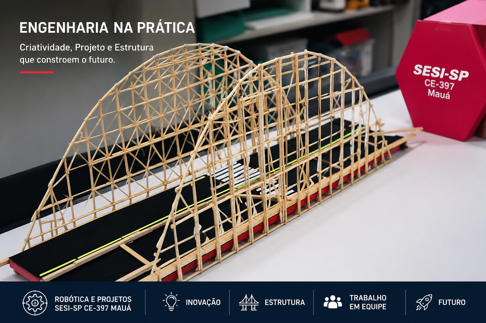
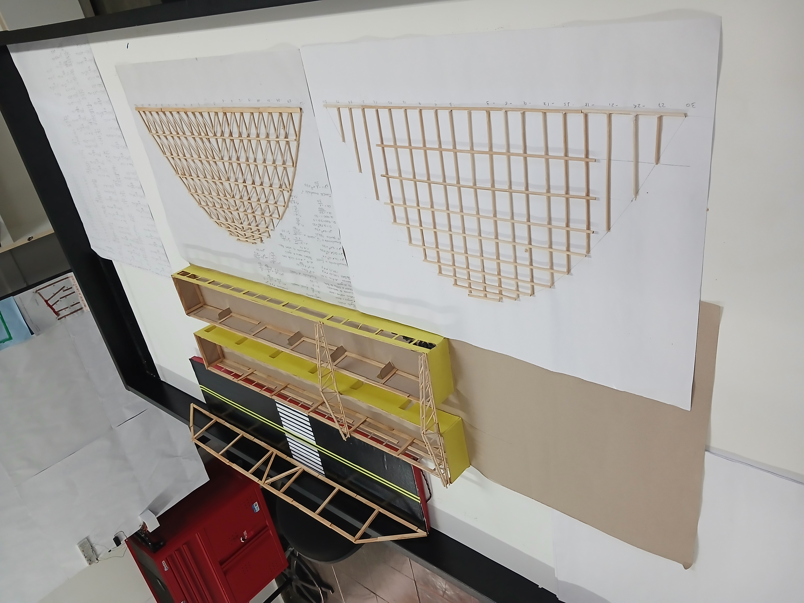
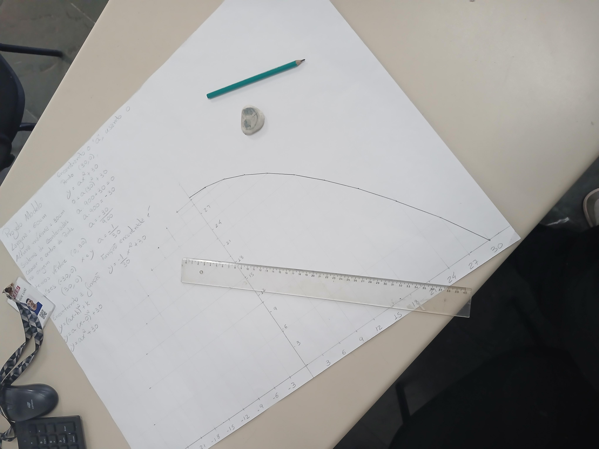
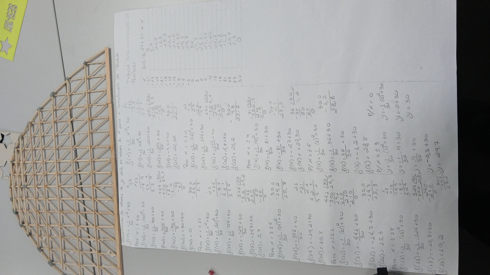

Estudo das parábolas por meio da construção de uma ponte em arco
A Matemática está presente em diversas situações do nosso cotidiano e, muitas vezes, seus conceitos podem ser compreendidos de forma mais significativa quando aplicados em desafios práticos. Pensando nisso, este projeto propõe o estudo da parábola e da Equação do Segundo Grau por meio da construção de uma ponte em arco, utilizando palitos de madeira como material de prototipagem. Ao longo da atividade, os participantes são convidados a investigar a forma parabólica, compreender sua aplicação na Engenharia e desenvolver um protótipo que relaciona conceitos matemáticos, criatividade e resolução de problemas. A construção da ponte permite visualizar, de maneira concreta, como a Matemática pode contribuir para o planejamento e a elaboração de estruturas presentes no mundo real. O projeto está fundamentado nos princípios da Cultura Maker, da abordagem STEAM (Ciência, Tecnologia, Engenharia, Artes e Matemática) e do Desenho Universal para a Aprendizagem (DUA), promovendo experiências de aprendizagem que valorizam a participação ativa, a experimentação, o trabalho colaborativo e o respeito às diferentes formas de aprender. Mais do que construir uma ponte, esta proposta busca despertar a curiosidade,7 incentivar a investigação científica e demonstrar que a aprendizagem se torna mais significativa quando teoria e prática caminham juntas.

O desafio do projeto
A Matemática está presente em inúmeras estruturas que fazem parte do nosso cotidiano, muitas vezes sem que percebamos sua importância. Pontes, edifícios, viadutos e outras obras de engenharia são exemplos de construções que utilizam princípios matemáticos para garantir estabilidade, segurança e eficiência. Neste projeto, propomos investigar como a parábola, representada pela Equação do Segundo Grau, pode ser aplicada na construção de uma ponte em arco. A atividade foi desenvolvida para aproximar os conceitos matemáticos da realidade dos estudantes, demonstrando que a Matemática não se limita aos cálculos realizados em sala de aula, mas constitui uma ferramenta essencial para compreender e transformar o mundo ao nosso redor. Por meio da construção de um protótipo utilizando palitos de madeira, os participantes são convidados a observar, analisar, experimentar e validar conceitos matemáticos em uma situação prática. Dessa forma, a aprendizagem torna-se mais significativa, despertando a curiosidade, o pensamento investigativo e a criatividade.

A matemática além da sala de aula
A Equação do Segundo Grau é um dos conteúdos mais importantes da Matemática e está presente em diversas aplicações da Engenharia, Arquitetura, Física e Tecnologia. Entretanto, muitos estudantes questionam onde esses conhecimentos podem ser utilizados na prática. Pensando nesse desafio, este projeto foi desenvolvido para demonstrar que a Matemática está presente em estruturas reais, como pontes, viadutos e arcos arquitetônicos. A forma parabólica, estudada por meio da Função Quadrática, contribui para a distribuição das cargas e para a estabilidade de diversas construções, tornando-se um excelente contexto para integrar teoria e prática. Ao observar uma ponte em arco, é possível perceber que conceitos matemáticos deixam de ser apenas representações no papel e passam a fazer parte de uma solução desenvolvida pela Engenharia para atender às necessidades da sociedade.

Aprendendo por meio da construção
Este projeto foi desenvolvido como um produto educacional destinado a apoiar professores na abordagem da Equação do Segundo Grau por meio de uma atividade prática e interdisciplinar. A proposta apresenta um modelo de referência para a construção de uma ponte em arco utilizando palitos de madeira, demonstrando como conceitos matemáticos podem ser aplicados em situações reais de maneira significativa. O material foi elaborado para servir como um guia pedagógico, oferecendo orientações para o planejamento, a organização e o desenvolvimento da atividade em sala de aula ou no Espaço Maker. Sua estrutura permite que cada professor adapte a proposta de acordo com a realidade de sua escola, os recursos disponíveis e as características de seus estudantes. A fundamentação da atividade está baseada nos princípios da Cultura Maker, da abordagem STEAM (Ciência, Tecnologia, Engenharia, Artes e Matemática) e do Desenho Universal para a Aprendizagem (DUA). Dessa forma, o projeto incentiva a criação de experiências de aprendizagem que valorizem a investigação, a experimentação, a colaboração e a participação de todos os estudantes, respeitando suas diferentes formas de aprender. Mais do que apresentar uma sequência de atividades, este material busca inspirar práticas pedagógicas que aproximem a Matemática da realidade, tornando o processo de ensino e aprendizagem mais dinâmico, contextualizado e significativo.

Desenvolvimento do projeto
Após a etapa de planejamento, inicia-se o desenvolvimento da proposta pedagógica. Nesta seção, apresenta-se a sequência de construção do protótipo da ponte em arco, elaborada para servir como referência aos professores que desejam aplicar a atividade em sala de aula ou no Espaço Maker. Cada etapa foi organizada de forma progressiva, permitindo compreender desde a preparação dos materiais até a montagem final da estrutura. Além da construção do protótipo, cada fase oferece oportunidades para explorar conceitos matemáticos, estimular a investigação, promover o trabalho colaborativo e favorecer a aprendizagem por meio da experimentação. As imagens apresentadas ao longo desta seção registram o processo de desenvolvimento do modelo, funcionando como apoio visual para o planejamento e a execução da atividade. O professor poderá adaptar cada etapa conforme os objetivos de aprendizagem, os recursos disponíveis e a realidade de sua instituição.

Planejamento e organização dos materiais
A construção da ponte em arco teve início com a organização do ambiente de trabalho e a seleção dos materiais necessários para o desenvolvimento do protótipo. Essa etapa é fundamental para garantir que todas as fases da atividade ocorram de forma organizada e segura. Antes de iniciar a montagem, recomenda-se que o professor apresente aos estudantes o objetivo da proposta, contextualizando a relação entre a parábola, a Equação do Segundo Grau e sua aplicação em estruturas de engenharia. Esse momento inicial favorece a participação dos estudantes e desperta o interesse pela atividade que será desenvolvida. A escolha de materiais simples, como palitos de madeira, cola e instrumentos de medição, demonstra que é possível desenvolver experiências significativas de aprendizagem utilizando recursos acessíveis, valorizando os princípios da Cultura Maker e da aprendizagem baseada em projetos.
Definição da parábola e construção do plano cartesiano
A construção do protótipo teve início com a elaboração de um plano cartesiano em cartolina, que serviu como base para a representação da parábola. Para este projeto, definiu-se um eixo X com comprimento total de 60 cm, posicionando o eixo Y exatamente no centro da base. Dessa forma, obteve-se uma distribuição de 30 cm no sentido positivo e 30 cm no sentido negativo do eixo X. Em seguida, foi estabelecida uma altura máxima de 30 cm para a parábola, definindo o valor máximo do eixo Y. Com essas dimensões, tornou-se possível iniciar a modelagem matemática da estrutura. Com as dimensões definidas, iniciou-se o cálculo do coeficiente a da função quadrática. A partir desse resultado, foi construída uma tabela de valores, atribuindo sucessivamente valores ao eixo X, de -30 cm até +30 cm, em intervalos de 1 cm. Para cada valor de X, foi calculado o correspondente valor de Y, permitindo determinar todos os pontos necessários para o traçado preciso da parábola. Para maior explicação segue uma foto do inicio do nosso projeto com uma tabela de calculos que pode ser usada como base de apoio pelos professore e estudantes.
